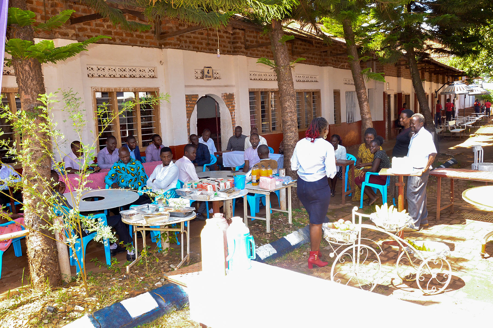
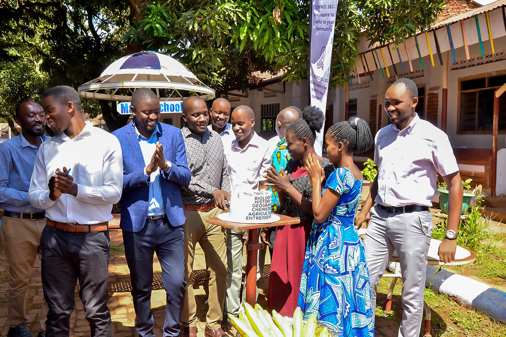

ST. FLORENCE SECONDARY SCHOOL
Always Aspire to be Useful to Your Community

| ACADEMICS | STAFF | SPORTS AND EVENTS | ABOUT US | HOME |
About Us
Our History
Founded in 1996, St.Florence S.S has grown from a small community school into a leading center of academic excellence. Over the years, we have nurtured thousands of learners, instilling in them knowledge, discipline, and values that prepare them to face the future with confidence. Our story is one of continuous growth, innovation, and a commitment to holistic education.
Our Administration
The school is led by a dedicated and experienced administration team that ensures smooth operations and the achievement of our mission and vision. The leadership works hand in hand with teachers, parents, and the community to create a supportive and inclusive learning environment.
Head Teacher / Principal – Provides overall leadership and strategic direction.
Director of Studies (D.O.S) – Oversees academics, curriculum, and assessment.
Directors & Board of Governors – Provide governance and long-term planning.
Our Staff
|  |  |
Our team of professional and passionate teachers forms the backbone of the school. Each teacher is highly qualified in their subject area and committed to delivering learner-centered lessons that encourage creativity, critical thinking, and practical skills. Non-teaching staff also play a vital role by ensuring the school runs efficiently and that learners are safe and cared for.
Academic Staff: Subject teachers, class teachers, heads of departments.
Support Staff: Librarians, ICT technician, bursars, matrons, and administrative officers.
Our Achievements
We take pride in our academic and extracurricular achievements over the years.
-
Consistently excellent performance in national examinations.
-
Alumni excelling in universities and various careers.
-
Recognition in sports, music, and drama competitions.
-
Community outreach programs that empower learners with social responsibility.
-
Modern facilities including ICT labs, science laboratories, and a well-stocked library.
At St. Florence, we believe that education is not just about passing exams but about developing the whole child – intellectually, socially, emotionally, and morally.